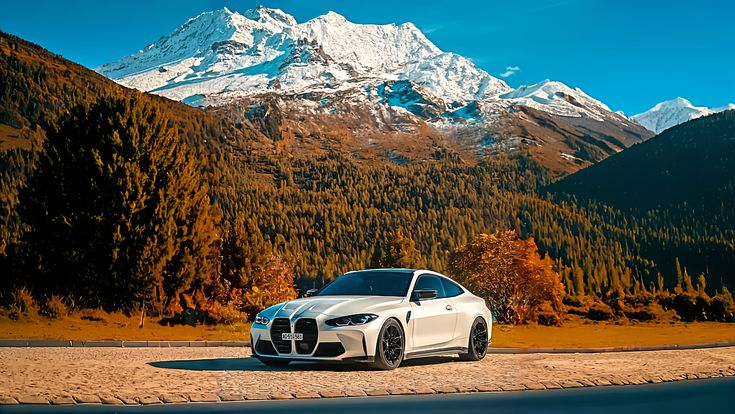
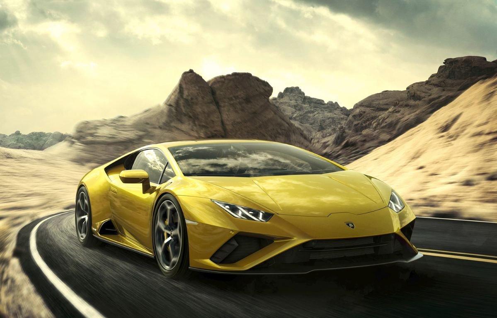
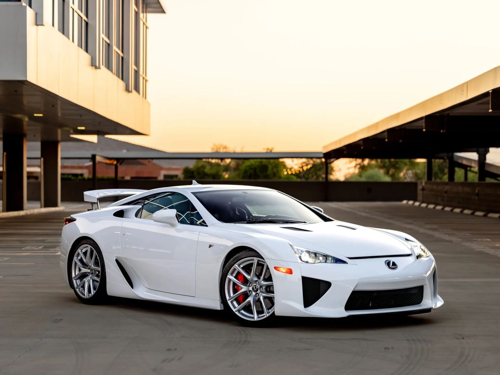
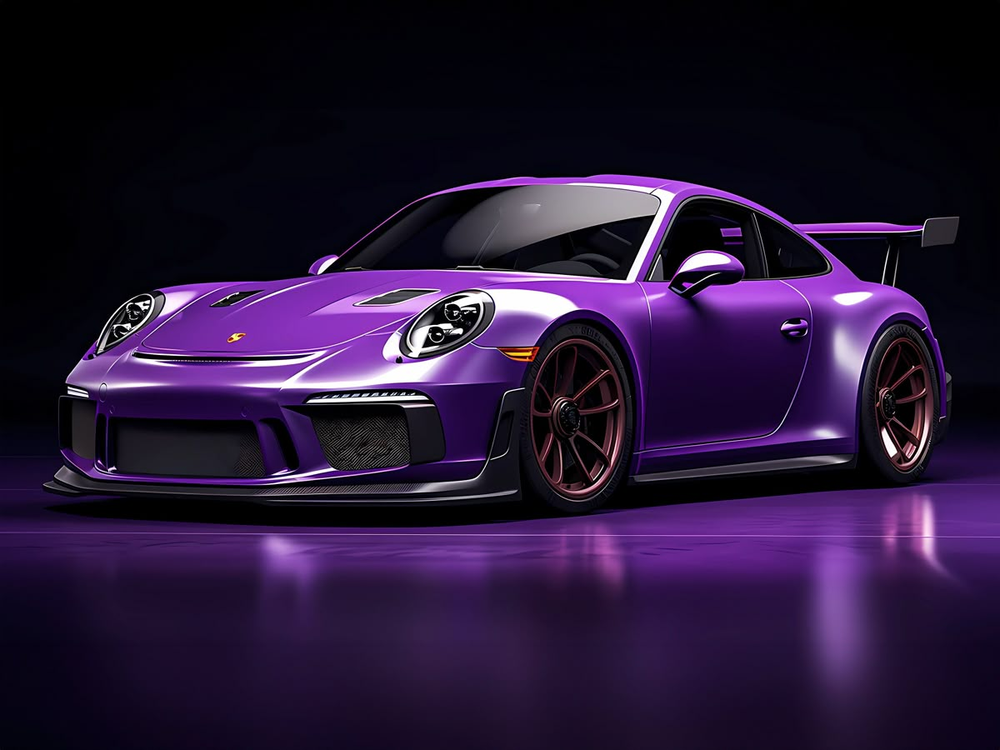
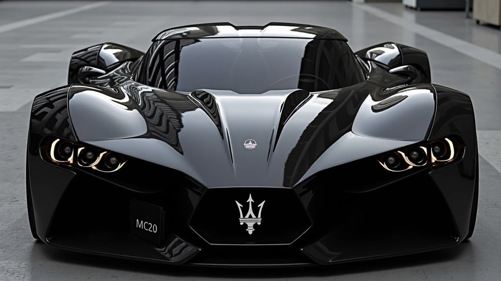

On Road
At Built Different, on-road cars are more than just machines — they are a feeling of freedom, power, and control. Every drive brings the thrill of smooth performance, responsive handling, and the confidence to conquer any road ahead. We focus on the real driving experience, where engine power meets comfort and style to create unforgettable journeys. From city streets to open highways, the connection between driver and car defines the true meaning of performance. The sound of the engine, the grip of the wheels, and the rush of acceleration make every moment exciting. Built Different is about cars that don’t just move you — they move your soul.





